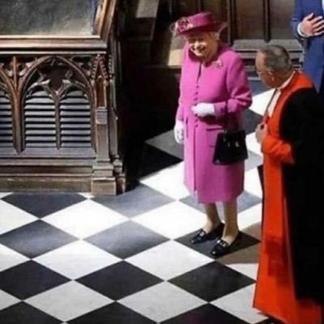

|  |
🤖Yuting Zhang🤖
Contact Me
Versatile digital advertising professional with more than six years of experience. Connects audiences
across multiple channels by deploying emerging ad tech and data-informed approaches. Decisive,
curious, and innovative problem solver with a passion for testing and storytelling.
|
PERSONAL STATEMENT
Versatile digital advertising professional with more than six years of experience. Connects audiences
across multiple channels by deploying emerging ad tech and data-informed approaches. Decisive,
curious, and innovative problem solver with a passion for testing and storytelling.
Data Visualization | Fractional Attribution | Call Tracking | Data Management | Data Analytics | Content Analytics |
Dynamic Creative | Ad Verification | Paid Search | Programmatic Buying | Paid Social | Python | HTML
PROFESSIONAL EXPERIENCE
MEDIA KITCHEN
New York, NY
Digital Enginnering Director
|
March 2021 - Present |
- Designs and deploys custom ad tech stacks; has onboarded LiveRamp, SAP Hybris, Rockerbox Attribution,
Datorama, Adelaide, Invoca Call Tracking, and Jivox (DCO)
- Leads strategic conversations and media recommendations to ensure investments are optimized to meet client
objectives
- Educates clients about latest industry developments and innovations
- Spearheads task force to integrate automation and AI applications in house
Senior Biddable Strategist
|
March 2021 - Present |
- Supervised two biddable teams: Loews Hotels and Comcast Spotlight
- Articulated insights and recommendations derived from large data sets and market research to clients
- Collaborates with vendors to create brand lift studies and design A/B tests in order to prove incrementality
- Managed media across search, programmatic, social, and direct buys
Extracurriculars
SYZYGY NYC
New York, NY
Senior Search Analyst
|
October 2015 - July 2016 |
- Restructured search campaigns for leading car rental group, which resulted in a 20% daily rental increase
- Oversaw projections, budgeting, optimizations, campaign expansions, competitive analysis, and reporting; client
budget increased 21% YoY
- Facilitated inter-agency collaboration to ensure cross channel targets alignment
Search Analyst
|
June 2014 - September 2015 |
- Leveraged revenue share model to allocate monthly investment of $1MM across accounts and engines
- Analyzed large data sets to routinely forecast traffic, SOV, revenue, and efficiency
- Executed six month ad copy A/B testing, resulting in 14% monthly rental increase and 8% revenue increase
- Supported AM and AD to present account insights for client meetings
EDUCATION
The Pennsylvania State University
- B.A. in Advertising, College of Communications
- Dean's List: Spring 2011 - Spring 2014